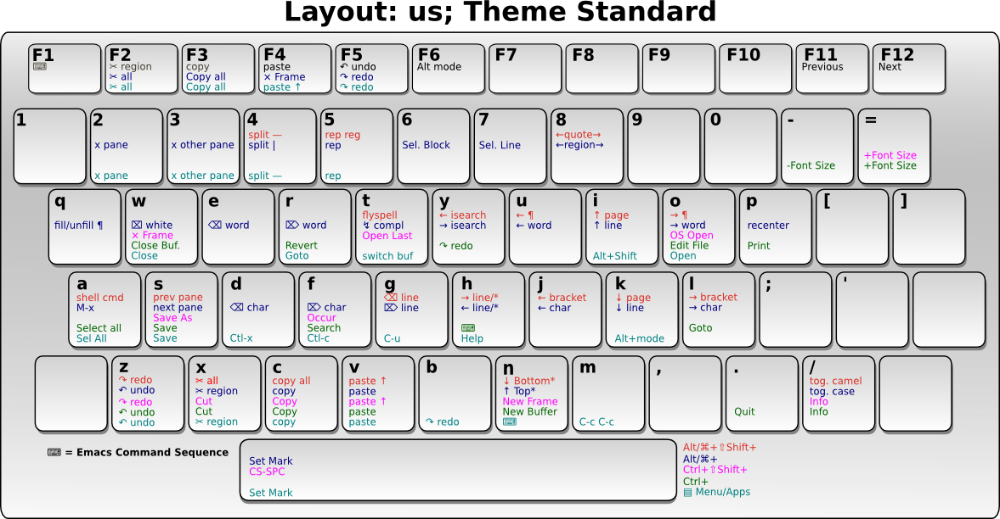

If you are a long time emacs user, you may find it painful to adopt this setup.
This difficulty is nothing special. It's the same difficulty when you switching to dvorak after years of qwerty. Basically, it's about changing muscle memory.
Here are some key-themes that may help you adopt ergoemacs-mode:
Level 1
If you find it too painful to switch, don't use the whole package. Instead, start off with just the arrow key movements.
(setq ergoemacs-theme "lvl1")
(ergoemacs-mode 1)
Either put the above in your emacs init file (usually at ~/.emacs or
~/.emacs.d/init.el), or customize ergoemacs-mode to set the theme to
lvl1.
With only the above change, you will increase your emacs productivity, especially if you are a touch typist. These single char cursor moving commands are the top 4 most frequently used emacs commands by statistics, roughly accounting for 43% of commands that have a shortcut.
Once you used the above for a couple of weeks, you may add more keys to adopt.
Level 2
Adding keys for moving around words and deleting words.
(setq ergoemacs-theme "lvl2")
(ergoemacs-mode 1)
Level 3
Full ergoemacs keyset without the <apps>/<menu> unchorded keys.
(setq ergoemacs-theme nil) (ergoemacs-theme-option-off '(apps apps-apps apps-punctuation apps-swap)) (ergoemacs-mode 1)
Full Ergoemacs Keys
Try to use the full ergoemacs mode.
(setq ergoemacs-theme nil) (ergoemacs-mode 1)

Guru
The guru theme takes away the arrow keys and page up/page down keys.
(setq ergoemacs-theme nil) (ergoemacs-theme-option-on '(guru)) (ergoemacs-mode 1)
Hardcore
The hardcore theme takes away the backspace key as well as the arrow and page up/down keys.
(setq ergoemacs-theme nil) (ergoemacs-theme-option-on '(guru no-backspace)) (ergoemacs-mode 1)